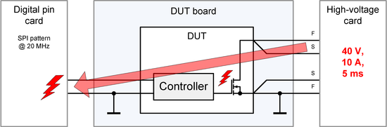
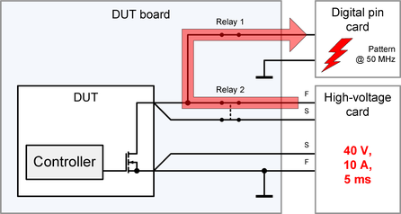

HV protection - Root causes for high-voltage damages
Root causes for damaged low-voltage test head cards are defective DUTs or unintentionally closed connections.
Defective DUTs
The following diagram is an example how a low-voltage card may be damaged by a defective device. The defective device routes the high voltage from the high-voltage card to the low-voltage card at the controller input of the DUT.

A defective DUT may be the root cause for high-voltage transients even if the DUT already has passed low voltage isolation tests.
Unintentionally closed connections
The next diagram shows how damage is caused by an unintentionally closed connection. Relays 1 and 2 are closed at the same time. The high voltage is routed via the two relays to the low-voltage card.

This type of error may be triggered under different circumstances:
- Both relays are closed unintentionally while creating and debugging an application.
- Overlapped switching of the relays is programmed and the high-voltage card is already connected.
- One of the relays on the DUT board is sticking.
Functional changes
- Introduced in SmarTest 7.3.1